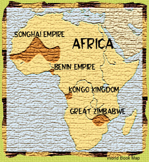

|
I am Ng'anga, a griot from the Akan
 country between the Atlantic port of El Mina to the south and the great Songhai Empire to the north. Most griots spend their lives traveling among their people and reciting classic stories of their history and traditions. In return for our performances, we griots receive food and shelter from those we regale with our tales. This is essential for the transmission of knowledge among my people and many other Africans because we do not have a written language like the Muslims to the north or the Christians at El Mina.But I am not like other griots. Instead of telling stories of my own culture, I make my living telling tales about other peoples in Africa--tales I have constructed from things I have seen in my travels and stories I have heard from others. My accounts of four great African empires, which I present here, have been constructed in such a way:
| ||||||||
| ||||||||
I will begin when you choose one of my tales. | ||||||||